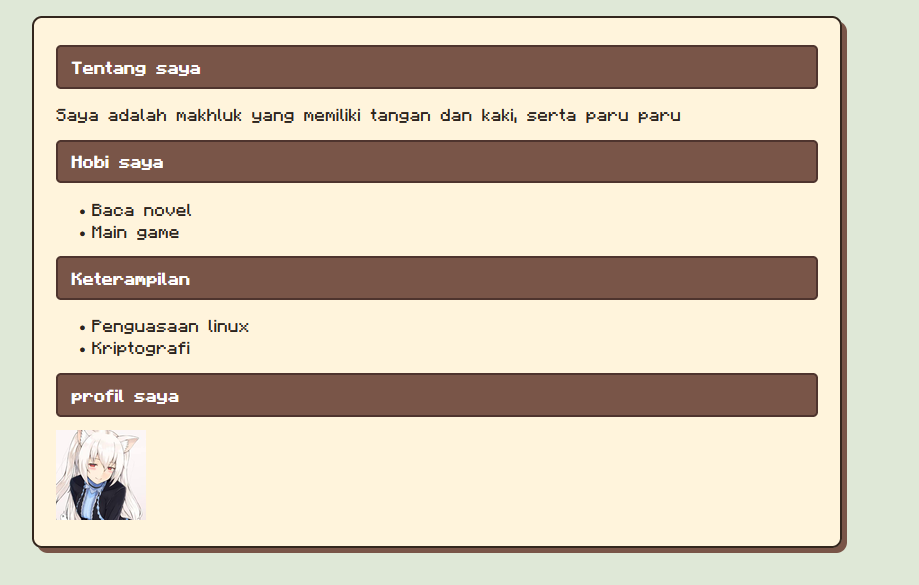

Website Portofolio
Proyek ini merupakan website portfolio sederhana yang dibuat menggunakan HTML dan CSS. Tujuannya adalah menampilkan informasi dan hasil pekerjaan dalam sebuah halaman website.
Lihat Proyek
Proyek ini merupakan website portfolio sederhana yang dibuat menggunakan HTML dan CSS. Tujuannya adalah menampilkan informasi dan hasil pekerjaan dalam sebuah halaman website.
Lihat Proyek